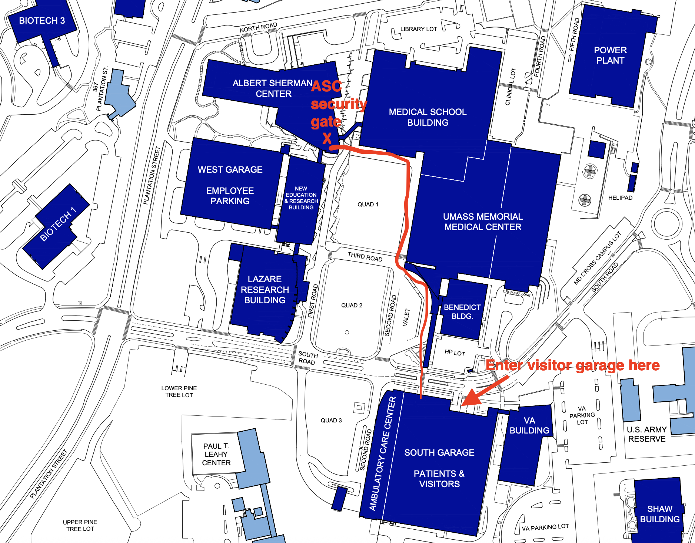

Get in touch
Contact
We welcome inquiries from prospective trainees and collaborators.
Our lab is located in the Albert Sherman Building (ASC) on the UMass Chan Medical School campus at 368 Plantation Street, Worcester, MA 01605.
We welcome students from the BBS (Basic Biomedical Sciences) and BCCB (Biophysical, Chemical, and Computational Biology) PhD programs at UMass Chan.
Address:
Gordân Lab
Department of Genomics and Computational Biology
UMass Chan Medical School
368 Plantation St. AS5-1059
Worcester, MA 01605
Email: raluca.gordan@umassmed.edu
Office phone number: 508-856-1608
Lab (AS7-1011, AS7-1012): 508-856-1611
